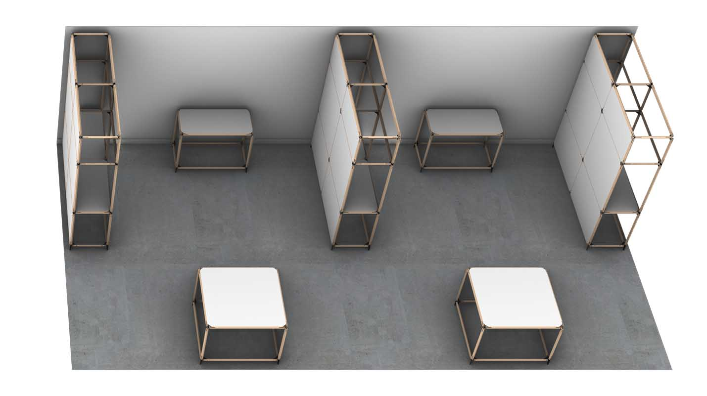
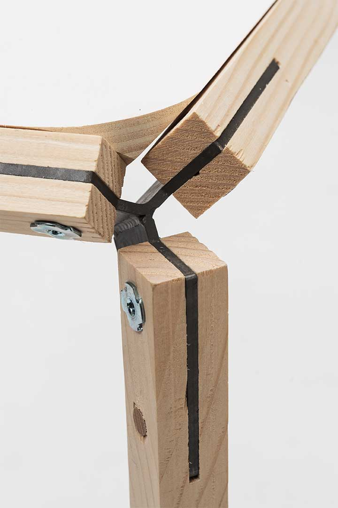
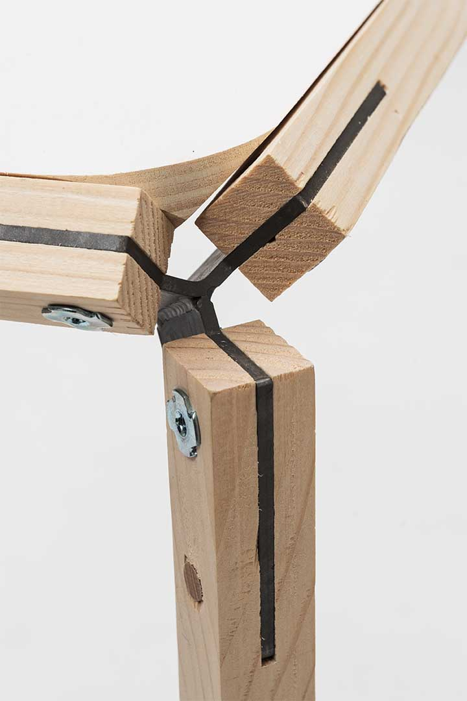

Nasa
2018
- Projet d'études
Comment donner aux jeunes en situation d’isolement géographique la chance d’accéder à l’éducation et aux loisirs ?
Les Petits débrouillards, un réseau participant au renouveau permanent de l’éducation populaire, a consulté l’ENSCI pour réfléchir sur la création d’un module pour scooter. Celui-ci permettrait aux intervenants du réseau de proposer des activités scientifiques, créatives et ludiques aux les jeunes vivant dans des zones délaissées.
Avec Adèle Nyitrai, nous avons proposé un module déployable, servant à la fois de contenant au matériel nécessaire aux activités et de plan de travail pour les effectuer.

Pol est un ensemble de structures réutilisables, pouvant être modulé pour créer un grand nombre de dispositions possibles.



Une plaque d’acier de 4mm d’épaisseur est découpée, pliée puis soudée pour former l’attache. Celle-ci, par une simple logique d’encastrement et de vissage, vient servir de pièce de liaison aux tasseaux de bois.
 



@ All right reserved @